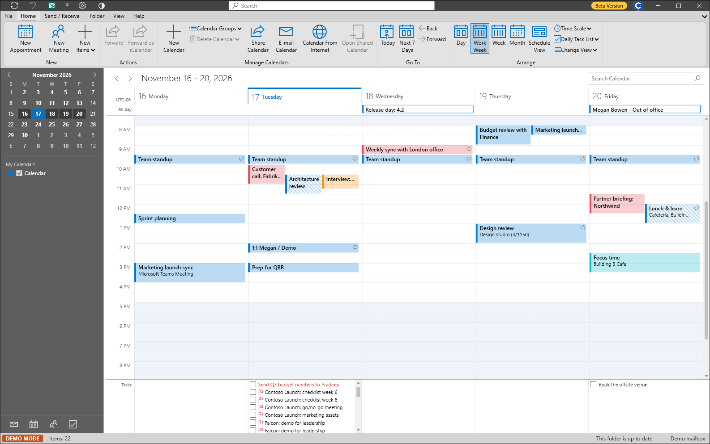
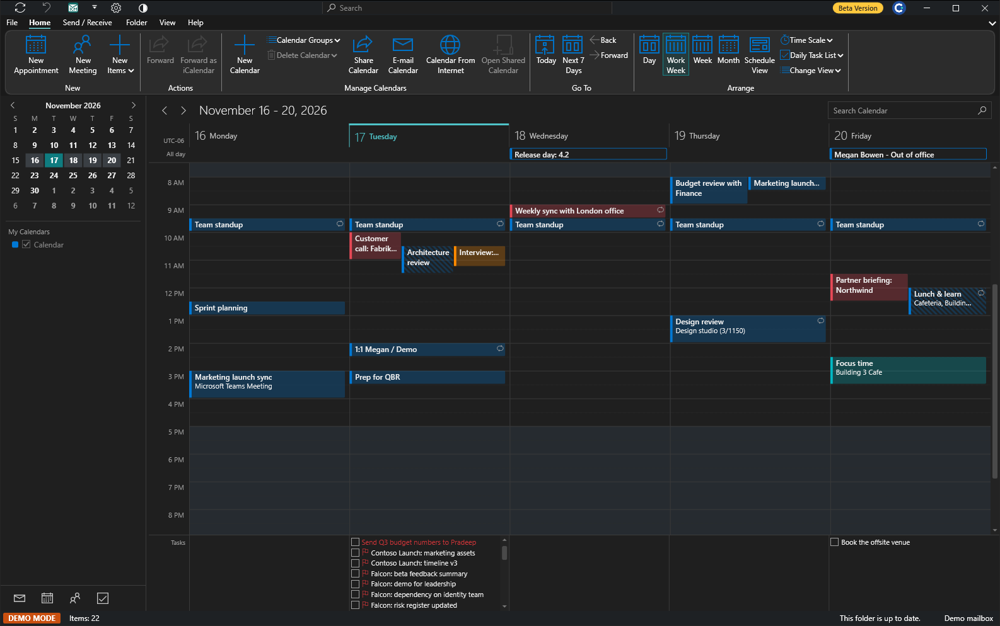
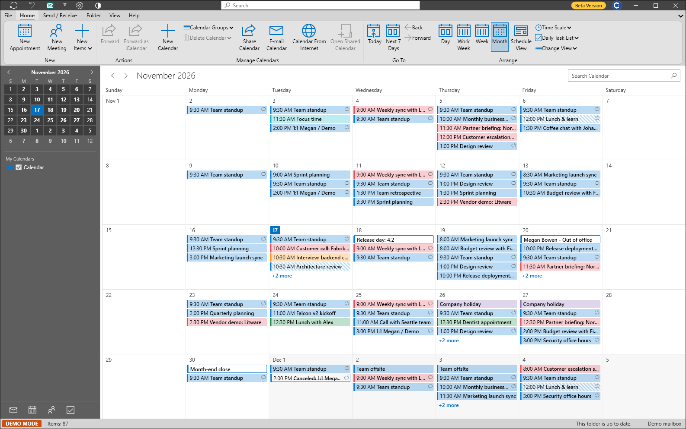
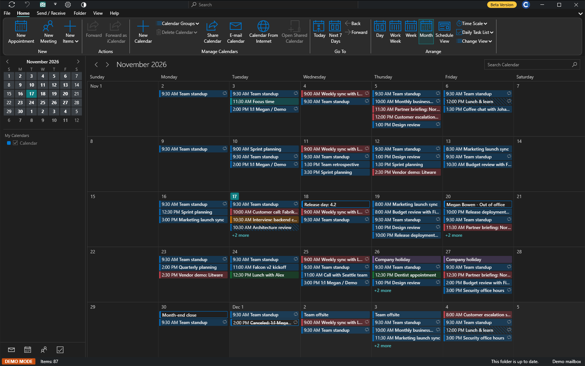

- Day, Work Week, Week, Month and Schedule views, Next 7 Days, Time Scale, a second time zone and week numbers.
- Appointments and meetings with recurrence, reminders, categories, attachments, Private and Show As.
- Scheduling Assistant with suggested times and AutoPick, Room Finder, and Teams meetings.
- Answer invitations with Accept, Tentative and Decline, Propose New Time, and Forward a meeting.
- Your calendar at that time beside an invitation in the reading pane, so you see what else is on that day before you answer.
- Drag to move or resize, Ctrl+drag to copy, and type in a time slot to add an appointment.




- My Calendars and Calendar Groups, shown side by side or overlaid in their own colors.
- Shared calendars, Share Calendar with permission levels, and internet calendars (.ics links).
- The Reminders window, for every account you’ve added, with Dismiss, Snooze (including “before start” times) and Join Online.
- Add Holidays, the Daily Task List, and the Preview and List views.




- Print the calendar in Daily, Weekly Agenda, Weekly Calendar, Monthly, Tri-fold and Calendar Details styles.
Missing something you used in Outlook? Choose Help → Suggest a Feature in the app. Found a bug? Choose Help → Report a Bug.